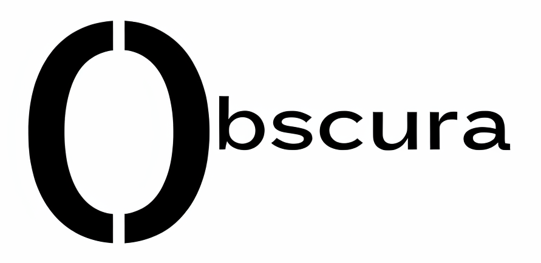

OBSCURA
SEE WHAT CAN’T BE SEEN

The name Obscura is derived from "camera obscura", a Latin term meaning “dark chamber.” Just as the original device helped people observe the world in new ways, Obscura was created to bring hidden things to light—specifically, signs of life or loss that would otherwise remain unseen.
Inspired by a commitment to aid humanitarian work and forensic missions, Obscura combines technology and purpose. It’s more than just a detection tool—it's a mission to support recovery, truth, and closure.
Technology is not just about innovation—it's about revelation.